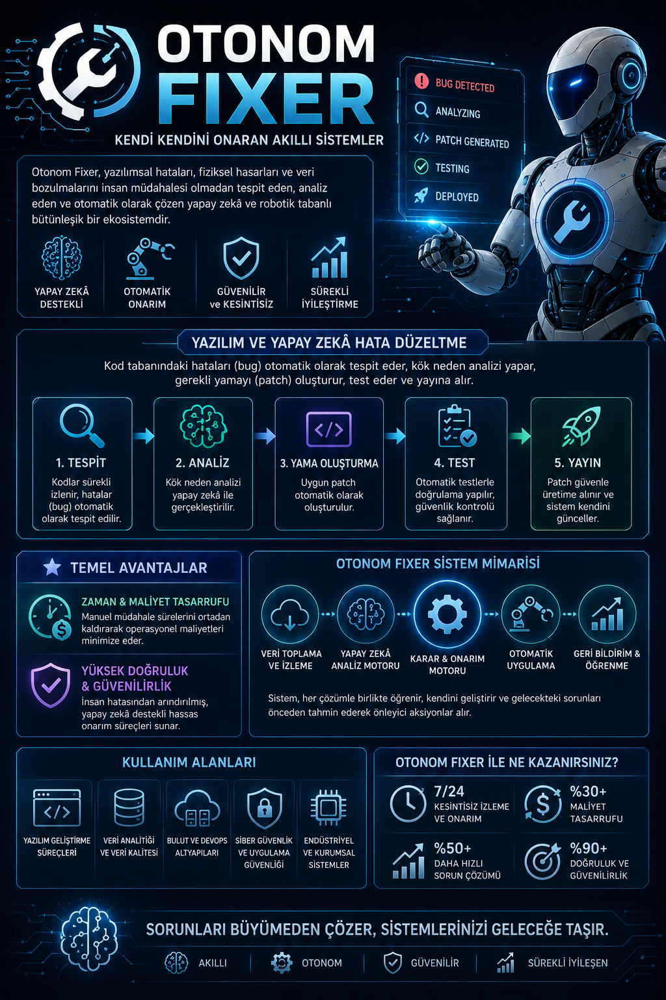

Teknik Özellikler
Multi-Agent Koordinasyonu
Kod inceleme, hata tespiti ve yama doğrulama adımlarının farklı uzman ajanlar tarafından ortaklaşa yürütülmesi.
Agentic Reasoning (Akıl Yürütme)
Gelişmiş LLM mimarileri kullanarak hataların sadece yerini belirlemekle kalmaz, kök nedenini mantıksal olarak analiz eder.
Otonom Yama (Patch) Üretimi
Tespit edilen yazılımsal bug'lar için projenin mevcut mimari yapısına ve kodlama standartlarına tam uyumlu çözümler yazar.
Sandbox Doğrulama
Üretilen yamaların ana koda basılmadan önce izole bir konteyner (sandbox) ortamında otomatik derlenip test edilmesi.
Model Bağlantı Altyapısı
Yerel (Local) Çalışma Modu
Kod güvenliği ve gizliliğinin en üst düzeyde olması gereken projeler için geliştirilmiş çalışma seçeneği.
• Ollama Entegrasyonu
• Llama 3 / Mistral Çevrimdışı Çalışma
• %100 Veri Gizliliği (Zero Data Leak)
Bulut (API) Çalışma Modu
Büyük ölçekli projeler ve karmaşık mantıksal analiz gerektiren bug'lar için yüksek performanslı çalışma seçeneği.
• Groq API ile Ultra Hızlı Çıkarım
• OpenAI (GPT-4o) / Claude Sonnet Entegrasyonu
• Gelişmiş Agentic Akıl Yürütme Kapasitesi
Çoklu Ajan İş Akış Kılavuzu
Sistem Çıktıları ve Analiz Ekranları



Ajanlar Arası Mimari Şeması